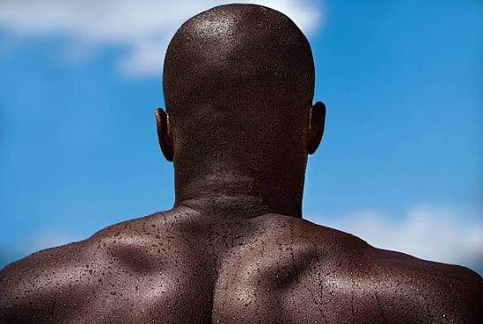

Culture
Black identity and culture are unique because they are shaped by deep historical resilience, rich traditions, and profound global contributions
Samson is a man who has alot of plans with his life. He is 6'6 and brown.

He appears stern, grumpy, and critical of society—often complaining about beggars or claiming people should be frugal
Beneath his harsh exterior, he has a deeply compassionate and generous heart. He constantly helps people in secret while pretending to scold or lecture them to maintain a tough facade.
His guarded nature stems from a life of past misfortunes, including a poor clergyman upbringing, broken friendships, a failed career, and time spent in prison after guaranteeing a loan for an unfaithful friend.
Black identity and culture are unique because they are shaped by deep historical resilience, rich traditions, and profound global contributions
That Black communities pioneered globally transformative musical genres, including jazz, blues, gospel, rock and roll, soul, funk, and hip-hop.
Historical accounts from the National Museum of African American History and Culture show how unique traditions grew out of the shared struggle against enslavement, segregation, and systemic racism.